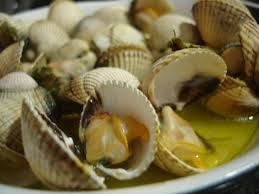

Cociña saudable


Neste apartado atoparás unha lista de entrantes e ensaladas ricas ricas
- Ensaladas Recomendadas
- Leituga e tomate da horta
- Espárragos andaluces con olivas
- Entrantes Recomendados
- Ameixas á marineda
- Berberechos


É o momento de comer algo delicioso: carne, peixe, marisco, paella. Todo delicioso!

Froitas, tartas de chocolate, cenorias, etc.

A nosa avoa cociña de xeito tradicional, pregunta por ela e contaráche algúns dos seus segredos.